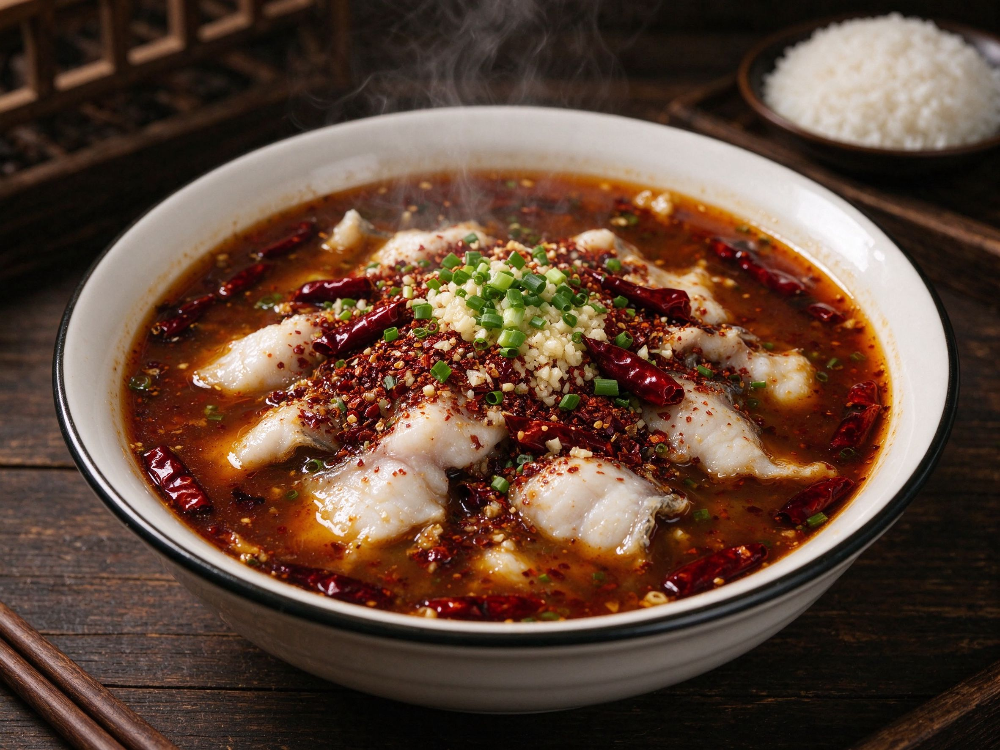

Shui Zhu Yu: Sichuan Water-Boiled Fish, Explained
The English name is misleading. Shui zhu means "water-boiled", and the fish really is poached in liquid — gently, for under a minute. The layer of oil that arrives at the end is never used to cook anything. It's poured, sizzling, over the chili flakes on top, which is why the fish underneath stays tender instead of turning into chili-flavoured rubber. Get the order of operations right and this is one of the easiest showpieces in Sichuan cooking.
Ingredients (serves 4)
- Fish: 500 g firm white fish fillets — catfish, basa, tilapia, or cod. Ask for them sliced on the bias, or slice them yourself 3–4 mm thick against the grain.
- Velveting: 1/2 tsp salt, 1/4 tsp white pepper, 1 tbsp cooking wine, 1 egg white, 2 tbsp cornstarch, 1 tbsp water
- Base: 250 g bean sprouts, blanched 1 minute and drained; optional sliced celery or napa cabbage
- Broth: 2 tbsp doubanjiang (fermented broad bean chili paste), 1 tbsp chili flakes, 3 slices ginger, 4 cloves garlic (smashed), 1 tsp sugar, 1 tsp light soy, 1 L water or unsalted stock, 1 tbsp cornstarch slurry
- Finish: 2 tbsp chili flakes, 1 tsp ground Sichuan pepper, 3 cloves garlic (minced), 3 scallions (sliced), 6–8 tbsp neutral oil heated to about 190 °C
Step 1: Velvet the Fish
Mix the salt, pepper, wine and water into the slices, then add the egg white and cornstarch and coat every piece. Rest 10 minutes. The egg white and starch form a thin protein-starch coat that keeps the fish from losing moisture the instant it meets hot broth. Skip this and the fish will flake apart into the soup.
Step 2: Build the Broth
- Heat 2 tbsp oil in a wok over medium. Add doubanjiang and fry 1 minute until the oil turns deep red — this is the flavour base, and under-frying leaves it raw and salty.
- Add ginger, garlic, chili flakes, sugar and soy; stir 30 seconds.
- Pour in the water, bring to a boil, then simmer 5 minutes. Taste: it should be savoury, salty and moderately hot, not punishing. Adjust now, because you won't be able to taste it once the oil goes on.
- Stir in the cornstarch slurry and simmer 1 minute to thicken slightly. A thicker broth holds the fish slices near the surface instead of letting them sink and break.
Step 3: Poach, Don't Boil
Drop the heat so the broth is barely bubbling — a gentle simmer, never a rolling boil. Slide the fish slices in one at a time, spreading them across the surface, and do not stir for 30 seconds. Then nudge them gently. They're done in 45–60 seconds, as soon as they turn opaque white and firm. Lift them out with a slotted spoon onto the blanched bean sprouts in a deep serving bowl, then pour the broth over. Scatter the topping chili flakes, ground Sichuan pepper, minced garlic and scallions in an even layer across the surface.
Step 4: The Oil Pour
Heat the oil until it's shimmering and a chili flake dropped in sizzles instantly — roughly 190 °C. Pour it slowly and evenly over the topping, moving around the bowl. The flakes should sizzle loudly, darken slightly and release their aroma; if nothing happens, the oil was too cool (the dish will taste raw and flat). If the flakes go black instantly, it was too hot and will taste bitter. Serve at once, with rice, and spoon the broth over the rice as you eat.
Notes on Heat
- Doubanjiang is the backbone, not the chili flakes. Pixian doubanjiang gives the fermented depth. Chili flakes give the color and the sharp heat. If you only have one, keep the doubanjiang.
- Sichuan pepper is aroma, not heat. Grind it fresh; pre-ground pepper loses the citrus-tingling quality within months.
- For a milder version halve the finish flakes but keep the doubanjiang — you lose heat, not flavour.
Common Failures
- Fish turns to mush. Boiled instead of simmered, or left in too long. 60 seconds is the whole window.
- Fish tastes bland inside. No velveting, or fillets sliced too thick. Thin slices take on flavour in seconds.
- Broth tastes raw and salty. Doubanjiang wasn't fried out, or the broth wasn't tasted before the oil went on.
- Greasy rather than fragrant. Too much finish oil. Six tablespoons over a whole bowl is plenty; a centimetre of oil is a restaurant conceit.
- Soggy vegetables. Bean sprouts need only a minute in boiling water; anything longer and they release water into the bowl.
If you like this technique, the same layering of fermented paste, aromatics and finishing oil runs through mapo tofu and Chongqing la zi ji. For the paste itself, see the doubanjiang guide.